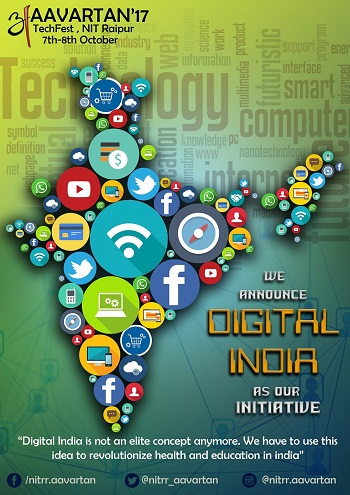

Vision
The vision of our Digital India Initiative is to help people get aware technologically and to use information technology to revolutionize public services
.Our vision has been taken from the Digital India Programme launched by the Government of India which is for transforming India into a digitally empowered society and knowledge economy.
How can we contribute?
● Guest Lectures
● Competitions
● Awareness Drives
● Hackathons
● Cashless Transactions
● Digital Services
About Digital India Initiative:
Digital India Initiative was launched by our Honorable Prime Minister Mr. Narendra Modi on July 1,2015.The initiative includes plans to connect rural areas with high speed internet networks .From this our team ,The Technocracy has taken a step to help spread Digital literacy and digital delivery of services in the country where the government is trying its best to create Digital infrastructure.
